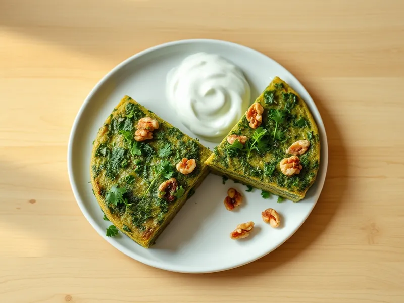

Фото: Иллюстрация ИИ, Cloudflare Workers AI
Кюкю с зеленью (азербайджанский омлет)
Плотный азербайджанский омлет из большого количества кинзы, укропа, петрушки и зелёного лука
30 мин2 порц.418 ккал на порциюБ 22 · Ж 34 · У 6Кавказская кухня
Открыть в приложении: порции, таймеры, список покупок
Продукты на 2 порц.
- Яйцо куриное5 шт
- Кинза1 пучок
- Укроп1 пучок
- Петрушка1 пучок
- Зелёный лук1 пучок
- Грецкие орехи2 ст. л.
- Сливочное масло20 г
- Соль1 ч. л.
- Перец чёрный молотыйпо вкусу
- Йогурт без добавок по желаниюпо вкусу
Как готовить
- Вымойте и обсушите зелень, мелко порубите её вместе с зелёным луком, орехи раздавите ножом. На это уйдёт 8 минут.
- Взбейте яйца с солью и перцем вилкой и смешайте с зеленью и орехами. Масса должна быть густой, зелени больше, чем яиц.
- Растопите сливочное масло в сковороде диаметром 22-24 см на среднем огне, вылейте массу и разровняйте.
- Накройте крышкой и жарьте на слабом огне 10-12 минут, пока верх не схватится и не перестанет быть жидким.
- Переверните кюкю с помощью тарелки и обжарьте вторую сторону 2-3 минуты. Нарежьте как пирог и подавайте с йогуртом.
Совет. Зелень должна быть совсем сухой: мокрая даст воду, и омлет не схватится.